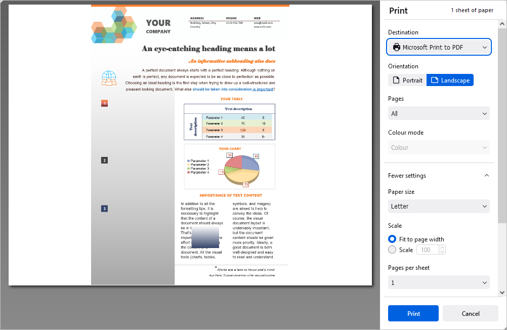

Čuvanje, preuzimanje i štampanje dokumenta
Čuvanje
Podrazumevano, online Document Editor automatski čuva vaš fajl na svake 2 sekunde dok radite na njemu, kako bi se sprečio gubitak podataka u slučaju da se program neočekivano zatvori. Ako zajednički uređujete fajl u režimu Fast, tajmer zahteva ažuriranja 25 puta u sekundi i čuva izmene ukoliko su napravljene. Kada se fajl zajednički uređuje u režimu Strict, izmene se automatski čuvaju u intervalima od 10 minuta. Po potrebi, lako možete izabrati željeni režim zajedničkog uređivanja ili isključiti funkciju Autosave na stranici Advanced Settings.
Da biste ručno sačuvali trenutni dokument u postojećem formatu i na istoj lokaciji,
- kliknite na ikonu Save u levom delu zaglavlja editora, ili
- koristite kombinaciju tastera Ctrl+S, ili
- kliknite na karticu File na gornjoj traci sa alatkama i izaberite opciju Save.
U desktop verziji, da biste sprečili gubitak podataka u slučaju da se program neočekivano zatvori, možete uključiti opciju Autorecover na stranici Advanced Settings.
U desktop verziji možete sačuvati dokument pod drugim nazivom, na novoj lokaciji ili u drugom formatu,
- kliknite na karticu File na gornjoj traci sa alatkama,
- izaberite opciju Save as,
- izaberite jedan od dostupnih formata u skladu sa vašim potrebama: DOCX, DOCXF, DOTX, ODT, OTT, RTF, TXT, HTML, FB2, EPUB, PDF, PDF/A. Takođe možete izabrati opciju Document template (DOTX ili OTT).
Preuzimanje
U online verziji možete preuzeti završni dokument na hard disk svog računara,
- kliknite na karticu File na gornjoj traci sa alatkama,
- izaberite opciju Download as,
- izaberite jedan od dostupnih formata u skladu sa vašim potrebama: DOCX, PDF, ODT, DOCXF, DOTX, PDF/A, OTT, RTF, TXT, FB2, EPUB, HTML, JPG, PNG.
Čuvanje kopije
U online verziji možete sačuvati kopiju fajla na svom portalu,
- kliknite na karticu File na gornjoj traci sa alatkama,
- izaberite opciju Save Copy as,
- izaberite jedan od dostupnih formata u skladu sa vašim potrebama: DOCX, PDF, ODT, DOCXF, DOTX, PDF/A, OTT, RTF, TXT, FB2, EPUB, HTML, JPG, PNG.
- izaberite lokaciju fajla na portalu i kliknite na Save.
Štampanje
Da biste odštampali trenutni dokument,
- kliknite na ikonu Print u levom delu zaglavlja editora, ili
- koristite kombinaciju tastera Ctrl+P, ili
- kliknite na karticu File na gornjoj traci sa alatkama i izaberite opciju Print.

U prozoru Print koji se otvori, podesite sledeće parametre:
- Destinacija – izaberite odredište za štampani fajl, npr. Save to PDF, Microsoft XPS Document Writer, Microsoft Print to PDF, Fax itd.
- Orijentacija – izaberite opciju Portrait ako želite vertikalno štampanje na stranici ili opciju Landscape za horizontalno štampanje.
- Stranice – izaberite jednu od opcija za štampanje stranica: All, Current, Odd, Even ili Custom. U poslednjem slučaju potrebno je ručno uneti brojeve stranica.
-
Režim boje – izaberite da li želite da se fajl štampa u Colour ili Black and white režimu. Imajte u vidu da je ova opcija dostupna kada je kao parametar Destination izabran Microsoft XPS Document Writer. Za parametar Fax režim boja je podrazumevano postavljen na black and white.
Kliknite na natpis More settings da biste otvorili napredna podešavanja.
- Veličina papira – izaberite jednu od dostupnih veličina iz padajuće liste ili podesite prilagođenu veličinu.
- Skala – podesite razmeru štampanja fajla; možete izabrati opciju fit it to page width ili ručno podesiti razmeru pomoću polja Scale i odgovarajućeg polja za unos.
- Stranice po listu – podesite broj stranica koje će biti odštampane na jednom listu, npr. two, six, nine itd.
- Margine – definišite margine stranice. Možete izabrati default margine ili prilagođene margine izražene u inčima. Za prilagođene margine ručno unesite potrebne vrednosti za gornju, donju, levu i desnu marginu. Takođe možete izabrati opciju None ako ne želite margine.
- Opcije – označite polje Print headers and footers da bi se zaglavlja i podnožja štampala ili uklonite oznaku ako ne želite njihovo štampanje.
- Štampajte pomoću sistemskog dijaloga – kliknite na ovaj natpis da biste otvorili sistemski dijalog za podešavanje procesa štampanja.
Takođe je moguće odštampati izabrani deo teksta korišćenjem opcije Print Selection iz kontekstnog menija u režimima Edit i View (klik desnim tasterom miša i izbor opcije Print selection).
U online verziji biće generisan PDF fajl na osnovu dokumenta. Možete ga otvoriti i odštampati ili sačuvati na hard disk računara ili prenosivi medij i odštampati kasnije. Neki pregledači (npr. Chrome i Opera) podržavaju direktno štampanje.
Opcije štampanja u desktop verziji su sledeće: izaberite štampač iz liste Printer, izaberite Print range, unesite Pages i broj Copies za štampanje, izaberite Print sides, Settings of sheet, Page size, Page orientation i Margins. Za dodatna svojstva štampača otvorite sistemski dijalog za štampanje pomoću opcije Print using the system dialog. Da biste završili podešavanje, koristite dugme Print ili Print to PDF. Dugme Quick print na gornjoj traci sa alatkama omogućava štampanje fajla koristeći poslednje izabrani štampač ili podrazumevani štampač.